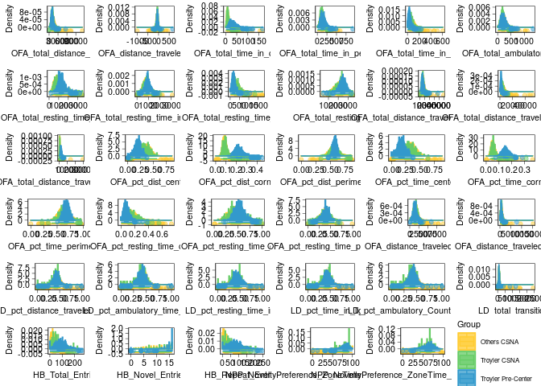

Last updated: 2021-12-08
Checks: 7 0
Knit directory: rta/
This reproducible R Markdown analysis was created with workflowr (version 1.6.2). The Checks tab describes the reproducibility checks that were applied when the results were created. The Past versions tab lists the development history.
Great! Since the R Markdown file has been committed to the Git repository, you know the exact version of the code that produced these results.
Great job! The global environment was empty. Objects defined in the global environment can affect the analysis in your R Markdown file in unknown ways. For reproduciblity it’s best to always run the code in an empty environment.
The command set.seed(20200501) was run prior to running the code in the R Markdown file. Setting a seed ensures that any results that rely on randomness, e.g. subsampling or permutations, are reproducible.
Great job! Recording the operating system, R version, and package versions is critical for reproducibility.
Nice! There were no cached chunks for this analysis, so you can be confident that you successfully produced the results during this run.
Great job! Using relative paths to the files within your workflowr project makes it easier to run your code on other machines.
Great! You are using Git for version control. Tracking code development and connecting the code version to the results is critical for reproducibility.
The results in this page were generated with repository version f98cb0c. See the Past versions tab to see a history of the changes made to the R Markdown and HTML files.
Note that you need to be careful to ensure that all relevant files for the analysis have been committed to Git prior to generating the results (you can use wflow_publish or wflow_git_commit). workflowr only checks the R Markdown file, but you know if there are other scripts or data files that it depends on. Below is the status of the Git repository when the results were generated:
Ignored files:
Ignored: .Rhistory
Ignored: .Rproj.user/
Ignored: code/.Rapp.history
Ignored: data/.Rhistory
Ignored: data/RDS/
Ignored: run/
Untracked files:
Untracked: LICENSE
Untracked: Untitled.R
Untracked: analysis/17_mapping_interpretation_old.Rmd
Untracked: analysis/20_predict_acquisition_from_novelty.Rmd
Untracked: analysis/21_DO_elasticnet_correlation.Rmd
Untracked: analysis/temp.txt
Untracked: code/DO_eQTL_perms.R
Untracked: code/DO_eQTL_score_calc.R
Untracked: code/STAR_RSEM_416.sh
Untracked: code/eQTL_plotting_DO_striatum_416.R
Untracked: code/ggplot_pub_themes.R
Untracked: data/20_elastic_mv_results.csv
Untracked: data/20_elasticnet_predictions.RDS
Untracked: data/DO_416_DGEList.RDS
Untracked: data/DO_416_DGEList_unfiltered (michael.saul@jax.org 2).RDS
Untracked: data/DO_416_DGEList_unfiltered (michael.saul@jax.org 3).RDS
Untracked: data/DO_416_DGEList_unfiltered (michael.saul@jax.org 4).RDS
Untracked: data/DO_416_DGEList_unfiltered (michael.saul@jax.org).RDS
Untracked: data/DO_416_DGEList_unfiltered.RDS
Untracked: data/DO_416_ERCC_DGEList.RDS
Untracked: data/DO_416_ERCC_cpm.RDS
Untracked: data/DO_416_normrt.RDS
Untracked: data/DO_416_pheno.RDS
Untracked: data/DO_416_pheno_allgenes.RDS
Untracked: data/DO_416_voom (michael.saul@jax.org).RDS
Untracked: data/DO_416_voom.RDS
Untracked: data/DO_416_voom_allgenes (michael.saul@jax.org 2).RDS
Untracked: data/DO_416_voom_allgenes (michael.saul@jax.org).RDS
Untracked: data/DO_416_voom_allgenes.RDS
Untracked: data/DO_416_voom_cpresiduals.RDS
Untracked: data/DO_AQ_active_CoV_toptable_annotated.RDS
Untracked: data/DO_AQ_lever_ratio_toptable_annotated.RDS
Untracked: data/DO_AQ_mean_inf_toptable_annotated.RDS
Untracked: data/DO_AQ_rate_toptable_annotated.RDS
Untracked: data/DO_IVSA_acquisition_cancor_df.RDS
Untracked: data/DO_IVSA_acquisition_logit_df.RDS
Untracked: data/DO_IVSA_acquisition_logit_glm.RDS
Untracked: data/DO_IVSA_all_cancor_df.RDS
Untracked: data/DO_IVSA_data.RDS
Untracked: data/DO_IVSA_novelty_cancor_ALL.RDS
Untracked: data/DO_IVSA_novelty_cancor_AQ.RDS
Untracked: data/DO_IVSA_novelty_data.RDS
Untracked: data/DO_IVSA_prediction_ACQUISITION_logit.RDS
Untracked: data/DO_IVSA_prediction_ACQUISITION_logit_2021-01-04.RDS
Untracked: data/DO_IVSA_prediction_ALL_cancor.RDS
Untracked: data/DO_IVSA_prediction_ALL_cancor_2021-01-04.RDS
Untracked: data/DO_IVSA_prediction_ALL_cancor_old.RDS
Untracked: data/DO_IVSA_prediction_AQ_cancor.RDS
Untracked: data/DO_IVSA_prediction_AQ_cancor_2021-01-04.RDS
Untracked: data/DO_IVSA_prediction_a1_ACQUISITION_logit.RDS
Untracked: data/DO_IVSA_prediction_a2_AQ_cancor.RDS
Untracked: data/DO_IVSA_prediction_a3_ALL_cancor.RDS
Untracked: data/DO_IVSA_prediction_a4_male_ALL_cancor.RDS
Untracked: data/DO_IVSA_prediction_a5_female_ALL_cancor.RDS
Untracked: data/DO_IVSA_raw_data.RDS
Untracked: data/DO_IVSA_transformed_data.RDS
Untracked: data/DO_LIMS_data.RDS
Untracked: data/DO_RTG_a1_new.qtl.RData
Untracked: data/DO_RTG_a1_new_1000x.qtlpermu.RData
Untracked: data/DO_RTG_a1_new_mapping_1000x.RData
Untracked: data/DO_RTG_a2_new.qtl.RData
Untracked: data/DO_RTG_a2_new_1000x.qtlpermu.RData
Untracked: data/DO_RTG_a2_new_mapping_1000x.RData
Untracked: data/DO_RTG_a3_new.qtl.RData
Untracked: data/DO_RTG_a3_new_1000x.qtlpermu.RData
Untracked: data/DO_RTG_a3_new_mapping_1000x_01.RData
Untracked: data/DO_RTG_a3_new_mapping_1000x_02.RData
Untracked: data/DO_RTG_a4_new.qtl.RData
Untracked: data/DO_RTG_a5_new.qtl.RData
Untracked: data/DO_RTG_elasticnet_new.qtl.RData
Untracked: data/DO_RTG_elasticnet_new_mapping_1000x.RData
Untracked: data/DO_RTG_project_df_for_mapping.RDS
Untracked: data/DO_RTG_project_df_for_mapping_2020-11-06.RDS
Untracked: data/DO_RTG_project_df_for_mapping_a2.RDS
Untracked: data/DO_RTG_project_df_for_mapping_sexspecific.RDS
Untracked: data/DO_demographic_data_df.RDS
Untracked: data/DO_eigengene_significance.RDS
Untracked: data/DO_eigengenes.RDS
Untracked: data/DO_highcor_cpresiduals_datatable.RDS
Untracked: data/DO_holeboard_data_df.RDS
Untracked: data/DO_holeboard_summarized.RDS
Untracked: data/DO_lightdark_data_df.RDS
Untracked: data/DO_mQTL_peaks.RDS
Untracked: data/DO_mQTL_scan1s.RDS
Untracked: data/DO_module_membership.RDS
Untracked: data/DO_novelplace_data_df.RDS
Untracked: data/DO_novelty_data.RDS
Untracked: data/DO_novelty_response_data.RDS
Untracked: data/DO_novelty_response_data_for_RTG.RDS
Untracked: data/DO_novelty_response_data_with_transform.csv
Untracked: data/DO_openfield_data_df.RDS
Untracked: data/DO_paraclique_data.el
Untracked: data/DO_paraclique_eigengenes.RDS
Untracked: data/DO_paracliques.RDS
Untracked: data/DO_paracliques_significance.RDS
Untracked: data/DO_ploidy_calls.RDS
Untracked: data/DO_pmap.RDS
Untracked: data/DO_pvalue_histograms.RData
Untracked: data/DO_rtg_a1_toptable_annotated.RDS
Untracked: data/DO_rtg_a2_toptable_annotated.RDS
Untracked: data/DO_rtg_a3_toptable_annotated.RDS
Untracked: data/DO_rtg_m1_toptable_annotated.RDS
Untracked: data/DO_rtg_m2_toptable_annotated.RDS
Untracked: data/DO_rtg_m3_toptable_annotated.RDS
Untracked: data/DO_str_2016_eQTL.RData
Untracked: data/DO_str_2016_gm4qtl2.zip
Untracked: data/DO_str_2016_gm4qtl2_intensities.fst
Untracked: data/DO_voom_cpresiduals_NArm.RDS
Untracked: data/DO_wgcna.RDS
Untracked: data/IVSA_RTG_a3_blup.pdf
Untracked: data/IVSA_h2_2019-11-18.tsv
Untracked: data/IVSA_metadata_sheet.RDS
Untracked: data/ME16_edges.tsv
Untracked: data/Mus_musculus.GRCm38.94.parsed.RDS
Untracked: data/Paraclique_19_MF_AMIGO.txt
Untracked: data/RTG_QTL_peaks.RDS
Untracked: data/RTG_figure.RDS
Untracked: data/SENS_RTG/
Untracked: data/Tyr2_genotypes.RDS
Untracked: data/Tyr_genotypes.RDS
Untracked: data/blup_chr7_DO_RTG_a3.RDS
Untracked: data/cc_variants/
Untracked: data/chr18_QTL_results.RDS
Untracked: data/chr4_QTL_results.RDS
Untracked: data/cis/
Untracked: data/eQTL_annotated_peaks.RDS
Untracked: data/eQTL_plots.RData
Untracked: data/figures/
Untracked: data/founders_key/
Untracked: data/gigamuga/
Untracked: data/gwas/
Untracked: data/info/
Untracked: data/m2G.a2.RTG.chr4snp.RData
Untracked: data/mapping_from_hao/
Untracked: data/perms/
Untracked: data/qtl2/
Untracked: data/raw/
Untracked: data/resources/
Untracked: data/tads_loops/
Untracked: data/transcripts/
Untracked: data/variants/
Untracked: logs/
Untracked: new_RTG_a3.jpeg
Untracked: output/RTG_out/
Untracked: output/docs_backup_2020-07-30.tar.gz
Untracked: output/elastic_net_out/
Untracked: singularity/
Untracked: tmp/
Untracked: var/
Unstaged changes:
Deleted: .Rprofile
Modified: .gitignore
Modified: README.md
Modified: analysis/17_mapping_interpretation.Rmd
Modified: analysis/_site.yml
Note that any generated files, e.g. HTML, png, CSS, etc., are not included in this status report because it is ok for generated content to have uncommitted changes.
These are the previous versions of the repository in which changes were made to the R Markdown (analysis/11_DO_novelty_response_summarize.Rmd) and HTML (docs/11_DO_novelty_response_summarize.html) files. If you’ve configured a remote Git repository (see ?wflow_git_remote), click on the hyperlinks in the table below to view the files as they were in that past version.
| File | Version | Author | Date | Message |
|---|---|---|---|---|
| html | 32fe7e2 | Michael C. Saul | 2020-12-30 | Build site. |
| Rmd | ed66291 | Michael C. Saul | 2020-12-30 | Updating novelty response to newest transformation method |
| html | 2e38c65 | Michael C. Saul | 2020-07-30 | Rolling back to working version. |
| html | 98b37fd | Michael C. Saul | 2020-06-02 | Build site. |
| Rmd | 4fd2837 | Michael C. Saul | 2020-06-02 | Minor tweaks. |
| html | 3373855 | Michael C. Saul | 2020-06-02 | Build site. |
| Rmd | 533efe3 | Michael C. Saul | 2020-06-02 | Tweak title to correct error |
| html | 32e5405 | Michael C. Saul | 2020-06-02 | Build site. |
| Rmd | 2c9c688 | Michael C. Saul | 2020-06-02 | Initial commit |
This script is used to summarize the novelty data upstream of using them for reference trait analysis.
Calling R libraries necessary for this analysis.
library("MASS")
library("readxl")
library("tidyr")
library("lubridate")
Attaching package: 'lubridate'The following objects are masked from 'package:base':
date, intersect, setdiff, unionlibrary("cowplot")
Attaching package: 'cowplot'The following object is masked from 'package:lubridate':
stamplibrary("ggplot2")
library("grid")
library("gridExtra")
library("ggplotify")
library("DiagrammeR")
library("nlme")
source("./code/ggplot_pub_themes.R")Getting norm_rank_transform() function.
norm_rank_transform = function(x, c = (0)) {
stopifnot(is.numeric(x) & is.vector(x))
x_noNA = which(!is.na(x))
N = length(x_noNA)
x[x_noNA] = qnorm((rank(x[x_noNA], ties.method = "average") - c) / (N - (2 * c) + 1))
return(x)
}Getting novelty data from raw file.
# Novelty
novelty_raw_file = "./data/raw/Novelty_raw_datarelease_JDO_07012020.csv"
novelty_raw = read.table(novelty_raw_file, sep = ",",
header = TRUE, stringsAsFactors = FALSE, comment.char = "%",
na.strings = c("NA","#N/A",""))
colnames(novelty_raw) = gsub("\\.","_",colnames(novelty_raw))
colnames(novelty_raw) = gsub("^NoveltyPreference","NPP_NoveltyPreference",colnames(novelty_raw))
row.names(novelty_raw) = novelty_raw$Mouse_ID
DO_novelty = novelty_raw[,(-1 * grep("^X", colnames(novelty_raw)))]
rm(list = c("novelty_raw"))Identifying the column IDs for the various paradigms.
# Getting column names of novelty response data
OFA_cols = colnames(DO_novelty)[grep("^OFA", colnames(DO_novelty))]
OFA_data_cols = OFA_cols[(-1 * which(OFA_cols %in% c("OFA_date_of_test","OFA_tester")))]
LD_cols = colnames(DO_novelty)[grep("^LD", colnames(DO_novelty))]
LD_data_cols = LD_cols[(-1 * which(LD_cols %in% c("LD_date_of_test","LD_tester")))]
HB_cols = colnames(DO_novelty)[grep("^HB", colnames(DO_novelty))]
HB_data_cols = HB_cols[(-1 * which(HB_cols %in% c("HB_Mouse_ID","HB_date_of_test","HB_tester")))]
NPP_cols = colnames(DO_novelty)[grep("^NPP", colnames(DO_novelty))]
NPP_data_cols = NPP_cols[(-1 * which(NPP_cols %in% c("NPP_date_of_test","NPP_tester")))]
# Getting numeric columns
DO_novelty_numeric_cols = c(OFA_data_cols, LD_data_cols, HB_data_cols, NPP_data_cols)The history of this dataset includes an event that substantially changed the behavioral data collection paradigms. Consequently, there is a known batch effect between the data collected before the start of the CSNA and data collected after the start of the CSNA.
One remaining question is whether the batch effect is an investigator effect or whether the batch effect is related to factors that changed systematically when the CSNA began. Because Troy (investigator ID: TW) and Tyler (investigator ID: TAR) worked together without differentiating themselves in the pre-center data, we refer to them in the pre-center data as TRTW (sometimes referred to as the portmanteu Troyler).
There were a number of steps taken to standardize all behavioral procedures at the initiation of the CSNA. Stacey Sukhoff-Rizzo became the Behavioral Phenotyping Core PI. She made some tweaks to novelty response paradigms and initiated rigorous validation protocols for all investigators.
Consequently, it makes sense to examine the sources of differences between Troy and Tyler before the CSNA began (precenter, examining data collected by TRTW) compared to after the CSNA began (CSNA, examining data collected by either TAR or TW).
# Getting Troyler IDs
TROY = "TW"
TYLER = "TAR"
TROYLER = "TRTW"
DO_novelty$OFA_troyler_group = rep("", times = nrow(DO_novelty))
DO_novelty$LD_troyler_group = DO_novelty$OFA_troyler_group
DO_novelty$HB_troyler_group = DO_novelty$OFA_troyler_group
DO_novelty$NPP_troyler_group = DO_novelty$OFA_troyler_group
for (i in c("OFA", "LD", "HB", "NPP")) {
testers_col_i = paste(i, "_tester", sep="")
troyler_group_col_i = paste(i, "_troyler_group", sep = "")
DO_novelty[,troyler_group_col_i] = ifelse(is.na(DO_novelty[,testers_col_i]), NA, "")
DO_novelty[,troyler_group_col_i] = ifelse((DO_novelty[,testers_col_i] %in% c(TROY, TYLER, TROYLER)) &
(DO_novelty$Group == "post_center"),
"Troyler CSNA", DO_novelty[,troyler_group_col_i])
DO_novelty[,troyler_group_col_i] = ifelse((DO_novelty[,testers_col_i] %in% c(TROY, TYLER, TROYLER)) &
(DO_novelty$Group == "pre_center"),
"Troyler Pre-Center", DO_novelty[,troyler_group_col_i])
DO_novelty[,troyler_group_col_i] = ifelse((!(DO_novelty[,testers_col_i] %in% c(TROY, TYLER, TROYLER))) &
(DO_novelty$Group == "post_center"),
"Others CSNA", DO_novelty[,troyler_group_col_i])
}
plots_order = character()
plots_groblist = gList()
for (i in c("OFA", "LD", "HB", "NPP")) {
vars_i = eval(parse(text = paste0(i, "_data_cols")))
for (j in vars_i) {
plots_order = c(plots_order, j)
df_j = data.frame(var_x = DO_novelty[,j],
group_var = DO_novelty[,paste0(i,"_troyler_group")],
stringsAsFactors = FALSE)
df_j = df_j[which(df_j$group_var != ""),]
csna_ranges_plot = ggplot(data = df_j, aes(x = var_x,
fill = group_var,
color = group_var)) +
geom_density(alpha = 0.5) +
geom_histogram(aes(y = ..density..), position="identity", alpha = 0.5, bins = 60)
max_ranges_plot_constant = max(ggplot_build(csna_ranges_plot)$layout$panel_scales_y[[1]]$range$range)
csna_ranges_plot = csna_ranges_plot +
geom_boxplot(aes(y = (-1 * (max_ranges_plot_constant / 7.227529))),
alpha = 0.5, width = (max_ranges_plot_constant / 7.227529)) +
scale_fill_manual(values = c("#FFCC33","#66CC66","#3399CC")) +
scale_color_manual(values = c("#FFCC33","#66CC66","#3399CC")) +
theme_bw() +
labs(color = "Group", fill = "Group") +
ylab("Density") +
xlab(j) +
pubtheme_bw +
theme(panel.grid = element_line(color = "#FFFFFF"),
legend.position = "none")
plots_groblist[[j]] = as.grob(csna_ranges_plot)
assign(paste0(j,"_grob"), as.grob(csna_ranges_plot))
}
}
csna_ranges_plot = ggplot(data = df_j, aes(x = var_x,
fill = group_var,
color = group_var)) +
geom_density(alpha = 0.5) +
geom_histogram(aes(y = ..density..), position="identity", alpha = 0.5, bins = 60)
max_ranges_plot_constant = max(ggplot_build(csna_ranges_plot)$layout$panel_scales_y[[1]]$range$range)
csna_ranges_plot = csna_ranges_plot +
geom_boxplot(aes(y = (-1 * (max_ranges_plot_constant / 7.227529))),
alpha = 0.5, width = (max_ranges_plot_constant / 7.227529)) +
scale_fill_manual(values = c("#FFCC33","#66CC66","#3399CC")) +
scale_color_manual(values = c("#FFCC33","#66CC66","#3399CC")) +
theme_bw() +
labs(color = "Group", fill = "Group") +
ylab("Density") +
xlab(j) +
pubtheme_bw +
theme(panel.grid = element_line(color = "#FFFFFF"))
legend_grob = as.grob(get_legend(csna_ranges_plot))
plots_order = paste0(plots_order, "_grob")
plots_order = c(plots_order, "legend_grob")
# plots_order = paste(plots_order, sep = "", collapse = ", ")
grid.arrange(OFA_total_distance_traveled_grob, OFA_distance_traveled_slope_grob, OFA_total_time_in_corner_grob,
OFA_total_time_in_perimeter_grob, OFA_total_time_in_center_grob, OFA_total_ambulatory_time_grob,
OFA_total_resting_time_in_corner_grob, OFA_total_resting_time_in_perimeter_grob, OFA_total_resting_time_in_center_grob,
OFA_total_resting_time_grob, OFA_total_distance_traveled_in_perimeter_grob, OFA_total_distance_traveled_in_center_grob,
OFA_total_distance_traveled_in_corner_grob, OFA_pct_dist_center_grob, OFA_pct_dist_corner_grob,
OFA_pct_dist_perimeter_grob, OFA_pct_time_center_grob, OFA_pct_time_corner_grob,
OFA_pct_time_perimeter_grob, OFA_pct_resting_time_center_grob, OFA_pct_resting_time_corner_grob,
OFA_pct_resting_time_perimeter_grob, OFA_distance_traveled_first_five_grob, OFA_distance_traveled_last_five_grob,
LD_pct_distance_traveled_in_light_grob, LD_pct_ambulatory_time_in_light_grob, LD_pct_resting_time_in_light_grob,
LD_pct_time_in_light_grob, LD_pct_ambulatory_Counts_in_light_grob, LD_total_transitions_grob,
HB_Total_Entries_grob, HB_Novel_Entries_grob, HB_Repeat_Entries_grob,
NPP_NoveltyPreference_ZoneTime_WhiteVsBlack_Total_grob, NPP_NoveltyPreference_ZoneTime_GreyWhiteBlack_Total_grob, legend_grob,
nrow = 6, ncol = 6)
| Version | Author | Date |
|---|---|---|
| 32fe7e2 | Michael C. Saul | 2020-12-30 |
With the except ion of the NPP dataset, where there are too few TAR or TW observations in CSNA to state the direction of the effect with certainty, the data demonstrate that where differences exist between precenter and CSNA data, they are accounted for not by the investigator (Troyler) but by the center status. We therefore assume that the difference between precenter and CSNA data is a batch and not a tester effect for analysis.
Note that the variable HB_Novel_Entries appears very different in pre-center vs CSNA datasets. In pre-center data, this is likely due to a 20 minute trial length, which is longer than the 10 minute trial length of CSNA data. This variable should not be used to fit models including both pre-center and CSNA datasets.
The data need transformation prior to use in correlational/linear modeling analysis. Transformation will:
precenter vs CSNA batch effect.HB_Novel_Entries data from the two datasets.Applying the rank-normal transformation separately to pre-center and CSNA data for all variables. Adding notations of raw onto the untransformed data. Placing pre-center and CSNA a label to HB_Novel_Entries batch-adjusted variables in separate columns.
DO_novelty = DO_novelty[,grep("troyler_group$", colnames(DO_novelty), invert = TRUE)]
CSNA_rows = which(DO_novelty$Group == "post_center")
precenter_rows = which(DO_novelty$Group == "pre_center")
split_precenter_postcenter = c("HB_Novel_Entries")
for (i in DO_novelty_numeric_cols) {
if (i %in% split_precenter_postcenter) {
DO_novelty[,paste0(i,"_precenter_ranknorm")] = rep(NA, times = nrow(DO_novelty))
DO_novelty[precenter_rows,paste0(i,"_precenter_ranknorm")] = norm_rank_transform(DO_novelty[precenter_rows,i])
DO_novelty[,paste0(i,"_CSNA_ranknorm")] = rep(NA, times = nrow(DO_novelty))
DO_novelty[CSNA_rows,paste0(i,"_CSNA_ranknorm")] = norm_rank_transform(DO_novelty[CSNA_rows,i])
colnames(DO_novelty)[which(colnames(DO_novelty) == i)] = paste0(i,"_raw")
} else {
DO_novelty[,paste0(i,"_batch_ranknorm")] = rep(NA, times = nrow(DO_novelty))
DO_novelty[CSNA_rows,paste0(i,"_batch_ranknorm")] = norm_rank_transform(DO_novelty[CSNA_rows,i])
DO_novelty[precenter_rows,paste0(i,"_batch_ranknorm")] = norm_rank_transform(DO_novelty[precenter_rows,i])
colnames(DO_novelty)[which(colnames(DO_novelty) == i)] = paste0(i,"_raw")
}
}Saving the DO novelty response data.
saveRDS(DO_novelty, file = "./data/DO_novelty_response_data.RDS")
write.csv(DO_novelty, file = "./data/DO_novelty_response_data_with_transform.csv", row.names = FALSE, col.names = TRUE, quote = FALSE)Warning in write.csv(DO_novelty, file = "./data/
DO_novelty_response_data_with_transform.csv", : attempt to set 'col.names'
ignoredThe output data are saved in ./data/.
This document was prepared using RMarkdown in RStudio.
sessionInfo()R version 4.1.2 (2021-11-01)
Platform: x86_64-pc-linux-gnu (64-bit)
Running under: Ubuntu 20.04.3 LTS
Matrix products: default
BLAS/LAPACK: /usr/lib/x86_64-linux-gnu/openblas-pthread/libopenblasp-r0.3.8.so
locale:
[1] LC_CTYPE=en_US.UTF-8 LC_NUMERIC=C
[3] LC_TIME=en_US.UTF-8 LC_COLLATE=en_US.UTF-8
[5] LC_MONETARY=en_US.UTF-8 LC_MESSAGES=C
[7] LC_PAPER=en_US.UTF-8 LC_NAME=C
[9] LC_ADDRESS=C LC_TELEPHONE=C
[11] LC_MEASUREMENT=en_US.UTF-8 LC_IDENTIFICATION=C
attached base packages:
[1] grid stats graphics grDevices utils datasets methods
[8] base
other attached packages:
[1] nlme_3.1-153 DiagrammeR_1.0.6.1 ggplotify_0.1.0 gridExtra_2.3
[5] ggplot2_3.3.5 cowplot_1.1.1 lubridate_1.8.0 tidyr_1.1.4
[9] readxl_1.3.1 MASS_7.3-54
loaded via a namespace (and not attached):
[1] tidyselect_1.1.1 xfun_0.28 purrr_0.3.4 lattice_0.20-45
[5] colorspace_2.0-2 vctrs_0.3.8 generics_0.1.1 htmltools_0.5.2
[9] yaml_2.2.1 utf8_1.2.2 gridGraphics_0.5-1 rlang_0.4.12
[13] jquerylib_0.1.4 later_1.3.0 pillar_1.6.4 glue_1.5.1
[17] withr_2.4.3 DBI_1.1.1 RColorBrewer_1.1-2 lifecycle_1.0.1
[21] stringr_1.4.0 munsell_0.5.0 gtable_0.3.0 workflowr_1.6.2
[25] cellranger_1.1.0 visNetwork_2.1.0 htmlwidgets_1.5.4 evaluate_0.14
[29] labeling_0.4.2 knitr_1.36 fastmap_1.1.0 httpuv_1.6.3
[33] fansi_0.5.0 highr_0.9 Rcpp_1.0.7 promises_1.2.0.1
[37] scales_1.1.1 jsonlite_1.7.2 farver_2.1.0 fs_1.5.1
[41] digest_0.6.29 stringi_1.7.6 dplyr_1.0.7 rprojroot_2.0.2
[45] tools_4.1.2 yulab.utils_0.0.4 magrittr_2.0.1 tibble_3.1.6
[49] crayon_1.4.2 whisker_0.4 pkgconfig_2.0.3 ellipsis_0.3.2
[53] assertthat_0.2.1 rmarkdown_2.11 R6_2.5.1 git2r_0.29.0
[57] compiler_4.1.2